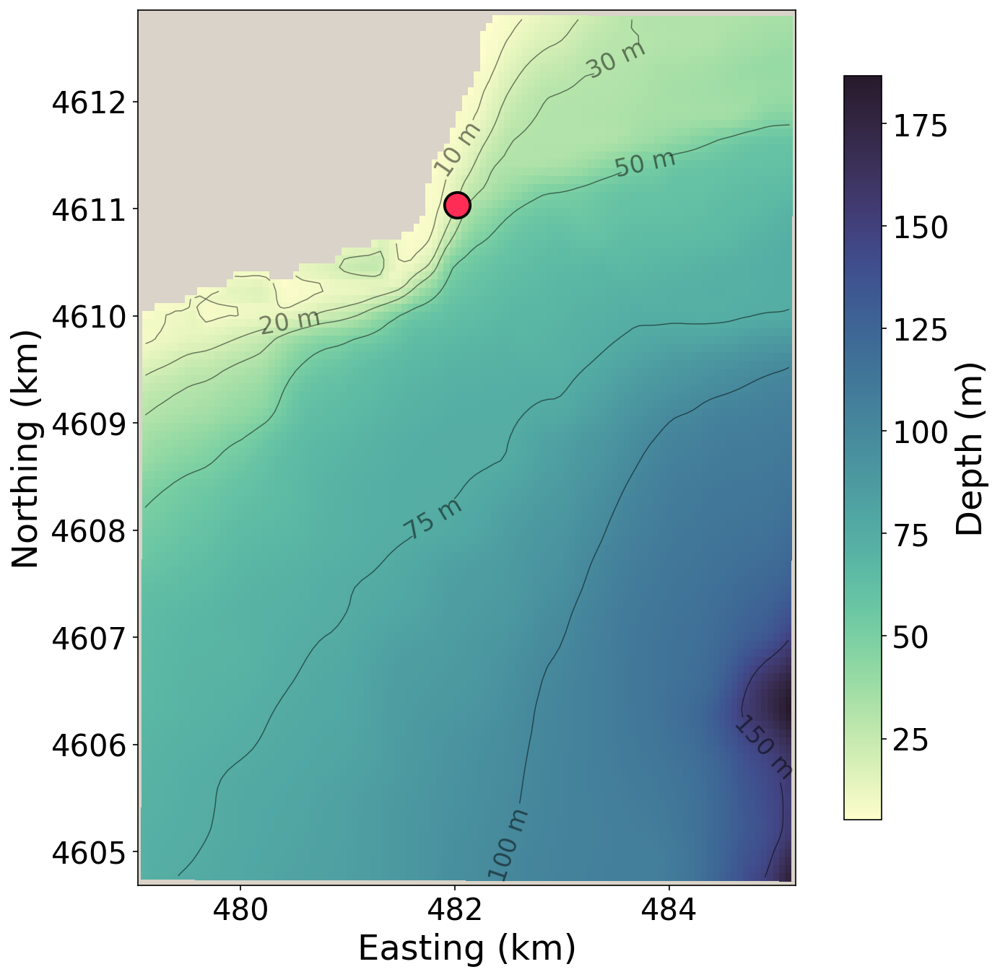
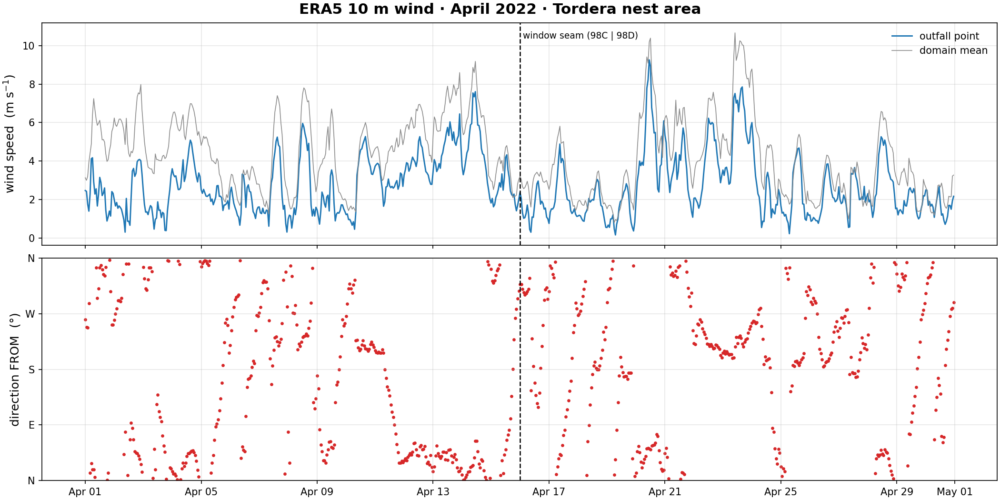
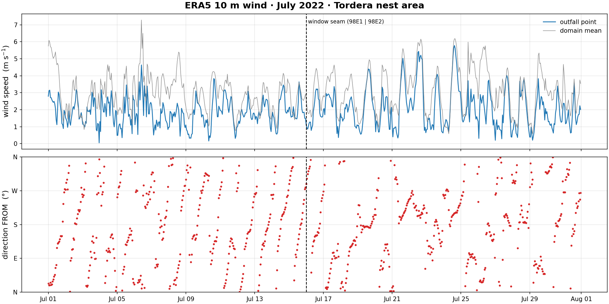

The simulations
| Configuration | Case | Discharge |
|---|---|---|
| Idealised slope | modal wind (1 m/s) | 3 days (the study window of the analysis, before the anomaly re-entering through the periodic boundary affects the study region) |
| extreme wind (4.8 m/s) | 3 days (the study window of the analysis) | |
| Realistic nest | 1-15 April 2022 | 8-15 April |
| 16-30 April 2022 | 23-30 April | |
| 1-15 July 2022 | 8-15 July | |
| 16-30 July 2022 | 23-30 July |
In short: the brine always sinks from the diffuser and travels along the seabed. In April it drains down the slope to 90-140 m and dilutes quickly; in July it stays confined between 20 and 30 m close to the coast, the least dispersive case. The anomaly descends further in April than in July because in July a thermocline slows the descent of the brine plume and confines it to the upper layer.
PART 1 — Idealised slope model
A straight shelf slope with a uniform wind, which isolates the effect of the wind on the plume from the complexity of the real bathymetry. The domain is 5.99 km across the shelf by 20.04 km along the coast (37 x 50 m cells, 75 vertical levels): the seabed falls from the coast to 80 m at 3 km offshore and is then flat out to the open boundary. Two wind regimes are compared, the most frequent one and a 95th-percentile event, and both are run with exactly the same open-boundary configuration and the same 15-day discharge, so the only difference between the two experiments is the wind. All slope videos share ONE colour scale, so what changes between the regimes is the plume, not the scale. The result is not what one might expect: the peak salinity excess falls only 16 % when the wind is five times stronger (1.52 to 1.29 psu), and in both regimes that peak sits in the discharge cell itself and is reached within the first hour, then holds steady for the whole fortnight. What the wind changes is the reach: the volume of water carrying a detectable excess is at least three times smaller under the strong wind, and it extends 3.6 km along the coast instead of filling the full 20 km of the domain.
The background state — control runs (no discharge)
The two control simulations WITHOUT the brine: temperature, salinity and the two current components on the vertical section at the outfall row, hourly over the same 3-day study window as the anomaly videos below (the full 15-day versions live in the archive). The domain is along-shore uniform, so this one section is representative of the whole shelf; the extreme control descends from its own 125-day spin-up under the same open boundary as the modal pair. Each variable keeps ONE colour scale across the two regimes, so what changes between the two columns is the wind’s imprint on the background, not the scale — the extreme background is fully mixed (14.0 °C top to bottom) and almost steady, while the modal background keeps a weak stratification and visibly stronger transient currents. Every anomaly video below is the difference between a twin of one of these runs (plus the discharge) and the run itself. The star marks where the diffuser sits in the brine runs.
Temperature — modal wind (1 m s-1)
cmocean thermal
Temperature — extreme wind (4.8 m s-1)
cmocean thermal
Salinity — modal wind (1 m s-1)
cmocean haline
Salinity — extreme wind (4.8 m s-1)
cmocean haline
Cross-shore current — modal wind (1 m s-1)
diverging scale, + = offshore
Cross-shore current — extreme wind (4.8 m s-1)
diverging scale, + = offshore
Along-shore current — modal wind (1 m s-1)
diverging scale, + = north
Along-shore current — extreme wind (4.8 m s-1)
diverging scale, + = north
The plume in 3D — two views of the whole domain
The salinity-excess surfaces over the seabed, across the entire 5.99 x 20.04 km domain: the shelf slope down to 80 m at 3 km from the coast, and the flat platform beyond it. Six nested surfaces from the measured noise floor (0.0092 psu) to 1.46 psu — everything drawn is real brine, and the descending plume can be followed all the way down the slope. The 2D sections below keep the report figures' finer 0.0003 psu minimum contour. The axes are labelled in km but are deliberately not to scale — the vertical is exaggerated so the plume is visible at all. Star = diffuser, red = shoreline.
front view — modal wind (1 m s-1)
the whole 6 x 20 km domain, shelf slope and outer platform
turned 90 degrees — modal wind (1 m s-1)
the same scene from the other side, coast on the right
front view — extreme wind (4.8 m s-1)
the whole 6 x 20 km domain, shelf slope and outer platform
turned 90 degrees — extreme wind (4.8 m s-1)
the same scene from the other side, coast on the right
Sections and plan views (report style)
The same slices used in the written report, animated: filled contour bands, ΔS below 0.0003 psu left white, grey seabed, and the colour scale shared with the report figures (0 to 1.54 psu).
Vertical section at the diffuser — modal wind (1 m s-1)
the row through the outfall
Vertical section 5 km along-shore — modal wind (1 m s-1)
downstream of the diffuser
Plan view at 43 m — modal wind (1 m s-1)
the depth the descending plume crosses
Plan view at 30 m — modal wind (1 m s-1)
just below the injection level
Vertical section at the diffuser — extreme wind (4.8 m s-1)
the row through the outfall
Vertical section 5 km along-shore — extreme wind (4.8 m s-1)
downstream of the diffuser
Plan view at 43 m — extreme wind (4.8 m s-1)
the depth the descending plume crosses
Plan view at 30 m — extreme wind (4.8 m s-1)
just below the injection level
PART 2 — Realistic nested model of the outfall
The real bathymetry of the Tordera outfall area at 56 x 75 m resolution and 107 vertical levels, with boundary currents from the regional CATSEA model and hourly ERA5 wind. Four two-week windows of 2022 sample a mixed spring column and a stratified summer one. All four months share ONE colour scale, so a surface that shrinks between months is a real change in the plume.
The receiving waters — control runs (no discharge)
The four simulated windows WITHOUT the outfall: temperature, salinity and current speed, hourly, as depth panels every 15 m. This is the context the brine falls into — in April the column is mixed top to bottom; in July a warm surface layer sits on a sharp thermocline, which is what later traps the plume near the surface. Every anomaly video below is the difference between a twin of one of these runs (plus the discharge) and the run itself.
Temperature — 1-15 April 2022
cmocean thermal, depth panels every 15 m
Temperature — 16-30 April 2022
cmocean thermal, depth panels every 15 m
Temperature — 1-15 July 2022
cmocean thermal, depth panels every 15 m
Temperature — 16-30 July 2022
cmocean thermal, depth panels every 15 m
Salinity — 1-15 April 2022
cmocean haline, depth panels every 15 m
Salinity — 16-30 April 2022
cmocean haline, depth panels every 15 m
Salinity — 1-15 July 2022
cmocean haline, depth panels every 15 m
Salinity — 16-30 July 2022
cmocean haline, depth panels every 15 m
Current speed — 1-15 April 2022
cmocean speed, depth panels every 15 m
Current speed — 16-30 April 2022
cmocean speed, depth panels every 15 m
Current speed — 1-15 July 2022
cmocean speed, depth panels every 15 m
Current speed — 16-30 July 2022
cmocean speed, depth panels every 15 m
The plume in 3D
Salinity-excess surfaces over the real seabed, hour by hour through the discharge week. Star = diffuser, red line = coastline.
3D plume — 1-15 April 2022
discharge 8-15 April
3D plume — 16-30 April 2022
discharge 23-30 April
3D plume — 1-15 July 2022
discharge 8-15 July
3D plume — 16-30 July 2022
discharge 23-30 July
3D plume, rotated — 1-15 April 2022
discharge 8-15 April
3D plume, rotated — 16-30 April 2022
discharge 23-30 April
3D plume, rotated — 1-15 July 2022
discharge 8-15 July
3D plume, rotated — 16-30 July 2022
discharge 23-30 July
Plume and local currents
Left: the plume in 3D from two cameras. Right: the model currents at six depths with the plume outline (cyan) on top — the direct link between the currents and how far the brine travels.
Plume vs currents — 1-15 April 2022
discharge 8-15 April
Plume vs currents — 16-30 April 2022
discharge 23-30 April
Plume vs currents — 1-15 July 2022
discharge 8-15 July
Plume vs currents — 16-30 July 2022
discharge 23-30 July
Depth-by-depth maps
Salinity excess by depth level. Values below 0.001 psu are drawn white ("no real anomaly"); the colour bar (0 to 3.42 psu) is the same in all four months.
Depth maps — 1-15 April 2022
discharge 8-15 April
Depth maps — 16-30 April 2022
discharge 23-30 April
Depth maps — 1-15 July 2022
discharge 8-15 July
Depth maps — 16-30 July 2022
discharge 23-30 July
Forcing: wind and currents
What drives the dispersion in the realistic runs.
ERA5 wind — April 2022
arrows = direction, colour = speed
ERA5 wind — July 2022
arrows = direction, colour = speed
{kind=link}
{kind=link}
{kind=link}
{kind=link}
{kind=link}

Wind time series — April 2022
{kind=link}
